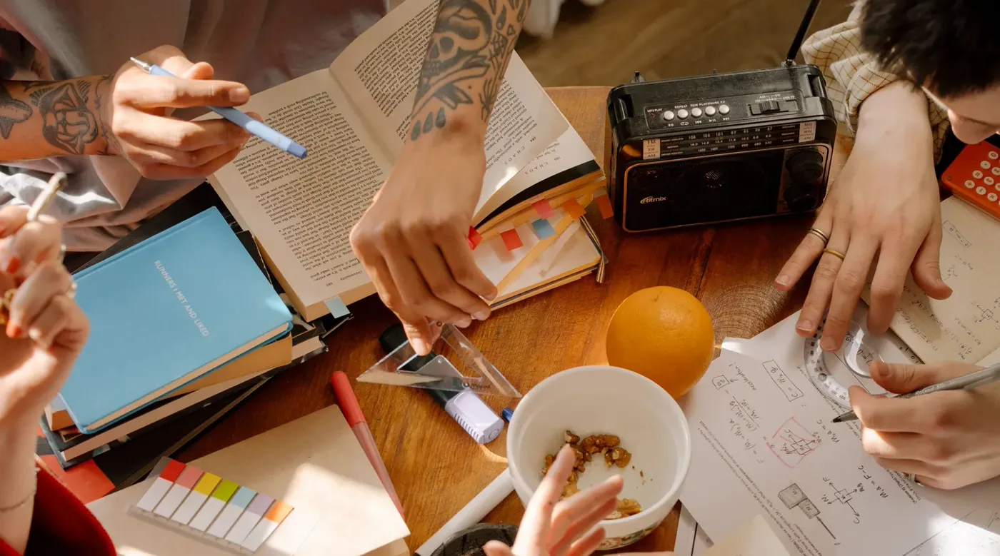

Inicio Nosotros
Somos nuevos. Por eso mostramos antes de cobrar.
NEA Sistemas es un estudio chico de Oberá, Misiones, que hace webs, posicionamiento, campañas y sistemas para negocios de todo el país. No tenemos una pared de logos ni veinte años de historia. Tenemos una forma de trabajar que se puede verificar antes de que pongas un peso.
Cada regla rara que tenemos salió de una desconfianza razonable.
Casi nadie llega a esta página con ganas de conocernos. Llega preguntándose si vale la pena arriesgar plata otra vez. Así que en vez de contarte quiénes somos, te contamos cómo decidimos trabajar y por qué cada decisión es como es.
Mostramos el trabajo antes de cobrarlo
Prometer es gratis y todos prometen lo mismo. Nos pareció más honesto invertir nosotros las primeras horas: mirar tu negocio, mirar a tus competidores y traerte algo concreto. Si lo que ves no te convence, no perdiste nada más que un rato de charla. El riesgo del arranque lo ponemos nosotros, no vos.
El diagnóstico es gratis y viene con precios adentro
Un diagnóstico sin números no sirve para decidir; sirve para que tengas que volver a preguntar. El nuestro llega en menos de 24 horas y dice qué te está frenando, qué conviene resolver primero y cuánto sale cada cosa. Es un documento con el que podés ir a pedir otra cotización y comparar. Sabemos que puede pasar y está bien.
El diseño existe antes que el contrato
Firmar por un sitio que todavía no viste es firmar por una descripción. Por eso armamos las pantallas principales navegables de verdad, con tus textos y tu identidad, y te pasamos un enlace para que las abras en tu celular. Recién ahí decidís. Cambiar algo en esa instancia cuesta una tarde; cambiarlo con el sitio programado cuesta plata.
Analizamos el negocio antes de tocar tecnología
La pregunta no es qué tecnología usar: es cómo entra hoy un cliente a tu negocio, dónde se cae y qué te preguntan siempre antes de comprar. Esa charla define todo lo demás. Elegir herramientas antes de entender eso es empezar por el final y es la razón por la que muchos proyectos terminan siendo lindos y no sirven.
No trabajamos con cualquiera, y preferimos decirlo acá.
No nos definimos por rubro. Nos definimos por un tipo de negocio: aquel donde la imagen, la confianza y la calidad influyen en la decisión de compra del cliente final.
Un restaurante, un estudio de arquitectura, un contratista, un consultorio y una marca de producto artesanal parecen cinco mundos distintos. Tienen el mismo problema de fondo: alguien los está comparando con otros tres y elige por quién le da más confianza. Ahí es donde servimos.
Y hay casos en los que no somos la opción correcta. Preferimos que te des cuenta ahora, leyendo, y no en la tercera reunión.
| Vamos a chocar si… | Encajamos si… | |
|---|---|---|
| Qué buscás | Lo más barato del mercado. Siempre va a haber alguien más barato que nosotros. | Querés que la plata rinda y estás dispuesto a mirar el costo a dos años, no solo el primer pago. |
| Cuándo lo necesitás | Para la semana que viene, sí o sí. | Podés esperar entre dos y seis semanas según el alcance, y avisás si tenés una fecha atada a algo. |
| Cuánto te vas a involucrar | No tenés una hora para explicar cómo funciona tu negocio. | Le podés dedicar una charla larga al arranque y responder dudas por WhatsApp mientras avanza. |
| Cómo compra tu cliente | Elige por precio más bajo y nada más. La imagen no le mueve la aguja. | Compara, se fija en cómo te presentás y elige por confianza. |
| Qué esperás de Google | Que te garanticen el primer puesto con fecha. | Entendés que el posicionamiento es sostenido y querés ver los números mes a mes. |
| Quién decide | Cada aprobación pasa por cinco personas y ninguna manda. | Hay alguien que puede mirar el diseño y decir que sí. |
Cuatro etapas en orden.
Cada una fabrica el insumo de la siguiente.
No vendemos servicios sueltos porque en este orden se potencian y en cualquier otro se desperdician. Traer visitas a un sitio que no convierte es pagar por gente que se va. Automatizar una operación que todavía no tiene demanda es automatizar el vacío.
Dicho eso: se cotizan por separado y no hay obligación de seguir. Mucha gente hace solo la primera y le alcanza para el año.
Armá tu presupuestoWeb — el lugar donde se decide
Un sitio propio, rápido, pensado para que la visita termine en una consulta. Es la base: sin esto, todo lo que venga después trae gente a un lugar que no cierra.
SEO — que te encuentren sin pagar el clic
Aparecer cuando alguien busca lo que hacés, en tu zona o en tu rubro. Es lento y es acumulativo: lo que se construye un mes sigue trayendo consultas al siguiente. Solo tiene sentido sobre un sitio que ya convierte.
Ads — acelerar lo que ya funciona
Campañas pagas encima de una base que sabemos que convierte, con costo por resultado medido. Poner plata en publicidad antes de tener eso es la forma más rápida de concluir que "la publicidad no sirve".
Sistemas — que la operación no te coma
Reservas, pedidos, presupuestos, atención por WhatsApp. Esta etapa aparece cuando el volumen ya es un problema, y no antes. Si todavía respondés cómodo a mano, te lo vamos a decir.
Dentro de cada etapa el proceso es siempre el mismo: Analizar → Diseñar → Construir. Con KPIs acordados antes de empezar, para que al final la discusión sea sobre números y no sobre impresiones.
Seis compromisos que preferimos dejar por escrito.
Ninguno de estos es un favor. Son las condiciones bajo las que nos gusta trabajar, y las escribimos acá para que puedas reclamarlas si alguna vez no las cumplimos.
- El mockup existe antes del contratoVes tu sitio navegable, en tu celular, con tus textos, antes de firmar nada. No una imagen: un enlace que se toca.
- El diagnóstico es gratis y trae preciosEn menos de 24 horas, por escrito, con qué te frena, qué hace tu competencia y cuánto sale cada cosa. Si decís que no, te queda igual.
- Todo queda a tu nombreDominio registrado a nombre de tu empresa, hosting en una cuenta tuya, código entregado. Si mañana trabajás con otro, se lleva todo y funciona.
- KPIs acordados por faseAntes de arrancar definimos qué número tiene que moverse y en cuánto tiempo. Sin eso, cualquier resultado se puede contar como éxito.
- Podés frenar al final de cualquier etapaSin permanencia y sin penalidad. Cada etapa termina en algo terminado que te llevás, no en una pieza a medio hacer.
- Te decimos cuando no hace faltaSi con un ajuste chico alcanza, o si lo que pedís es caro y no te va a mover el número, lo decimos. Vender de más una vez cuesta un cliente para siempre.
En Oberá, Misiones. Trabajando con todo el país.
Lo decimos sin vueltas porque tarde o temprano aparece: no estamos en Buenos Aires y a nuestros clientes no les hizo diferencia.
El arranque es una videollamada de una hora. Ahí contás cómo funciona tu negocio, qué te preguntan siempre los clientes y qué tipo de trabajo querés que te llegue más. Es la única reunión larga de todo el proyecto.
El día a día pasa por WhatsApp. Dudas, fotos, textos, correcciones y aprobaciones. Sin cadenas de mails con doce personas en copia y sin tener que agendar una reunión para preguntar una cosa.
Los avances los mirás vos. Cada vez que hay algo para ver te llega un enlace que abrís en tu propio teléfono, en tu conexión, como lo va a ver tu cliente. No mandamos capturas de pantalla: las capturas siempre se ven mejor que la realidad.
Lo único que cambia por la distancia es que no vamos a tomar un café. El resultado no.

Recién empezamos. Te contamos qué significa eso para vos.
Podríamos escribir "más de una década de experiencia" y nadie lo verificaría. Preferimos no arrancar una relación de trabajo mintiendo sobre el primer dato.
No tenemos cien casos ni testimonios de vitrina
Hoy los proyectos nos llegan por recomendación de gente que ya trabajó con nosotros. Es poco volumen y es honesto. Cuando haya casos con números reales para mostrar, van a estar acá con nombre y con cifras, no como una frase entre comillas sin autor.
Atendés directo con quien hace el trabajo
No hay ejecutivo de cuentas que te escuche y después le pase un resumen a alguien que nunca habló con vos. Lo que contás en la primera charla lo escucha la persona que va a diseñar y programar. Es la parte que más se pierde cuando la agencia crece.
Tu proyecto no es uno más en la fila
Tomamos pocos proyectos a la vez, no por estrategia sino porque somos pocos. En la práctica significa que el tuyo se piensa entero, y que si algo sale mal lo arreglamos nosotros el mismo día.
Nos conviene mucho que te salga bien
Nuestro canal principal hoy es que alguien te recomiende. Un proyecto entregado a medias no nos ahorra trabajo: nos corta la única vía por la que estamos consiguiendo clientes. Es la garantía menos romántica que existe y probablemente la más confiable.
Lo que nos preguntan antes de decidirse.
¿Cuánto hace que existe NEA Sistemas?
Poco. Estamos arrancando y hoy los proyectos nos llegan por recomendación de gente que ya trabajó con nosotros. No tenemos veinte años de historia ni una pared de logos, y no vamos a inventarlos.
Lo que sí tenemos es que atendés directo con quien hace el trabajo, sin capas de cuentas en el medio, y que estos primeros proyectos nos importan bastante más de lo que le importaría tu cuenta a una agencia con la agenda llena.
¿Trabajan con cualquier rubro?
No nos definimos por rubro sino por tipo de negocio: aquellos donde la imagen, la confianza y la calidad influyen en la decisión de compra del cliente final. Un restaurante, un estudio de arquitectura, un contratista, una marca de producto y un consultorio son negocios distintos con el mismo problema de fondo.
Si tu cliente elige por precio más bajo y nada más, no somos la opción correcta y te lo vamos a decir en la primera charla.
Estoy en otra provincia. ¿Cómo es trabajar a distancia?
Estamos en Oberá, Misiones, y trabajamos con negocios de todo el país. El arranque es una videollamada de una hora. Después el día a día pasa por WhatsApp: dudas, fotos, textos, aprobaciones.
Los avances los ves en un enlace que abrís en tu propio celular, no en capturas nuestras. Lo único que cambia por la distancia es que no vamos a tomar un café; el resultado no. Sí importa tu ubicación para el posicionamiento: si tu clientela es de tu ciudad, el sitio se arma para aparecer en las búsquedas de tu zona, no en las nuestras.
¿Por qué el diagnóstico es gratis? ¿Dónde está el truco?
No hay truco: es nuestra forma de conseguir trabajo. Preferimos invertir unas horas en mostrarte algo concreto sobre tu negocio antes que pedirte que confíes en una promesa que suena igual a todas las demás.
Llega en menos de 24 horas, con precios adentro, y si decidís que no, no debés nada y el informe te queda igual. Podés usarlo para pedir otra cotización y comparar. Pasa, y está bien: si otro lo resuelve mejor, mejor para vos.
¿Qué pasa si a mitad del proyecto quiero frenar?
Cada etapa se cotiza por separado y termina en algo que te llevás. Podés frenar al final de cualquiera sin deberle nada a la siguiente.
Si frenás después del diseño, te quedan las pantallas y los textos. Si frenás después de la web, te queda la web funcionando y a tu nombre, sin obligación de contratar posicionamiento ni campañas. Nos conviene menos en lo inmediato, obviamente. También nos obliga a que cada etapa se defienda sola, que es exactamente el punto.
¿Por qué insisten tanto con que todo quede a mi nombre?
Porque en el rubro es común lo contrario: el dominio queda registrado a nombre del proveedor, el hosting en su cuenta y el código en su servidor. Mientras la relación va bien, no se nota nada.
El día que querés cambiar de proveedor descubrís que tu dirección de internet no es tuya y que irte significa empezar de cero. Nosotros registramos el dominio a nombre de tu empresa, te damos los accesos y te entregamos el código. Preguntáselo a cualquiera que cotices, no solo a nosotros.
La forma más rápida de saber si somos para vos.
Contanos a qué se dedica tu negocio y en menos de 24 horas te llega el diagnóstico: qué te está frenando, qué hace tu competencia, qué conviene hacer primero y cuánto sale cada cosa. Sin costo. Si no te cierra, ahí termina.